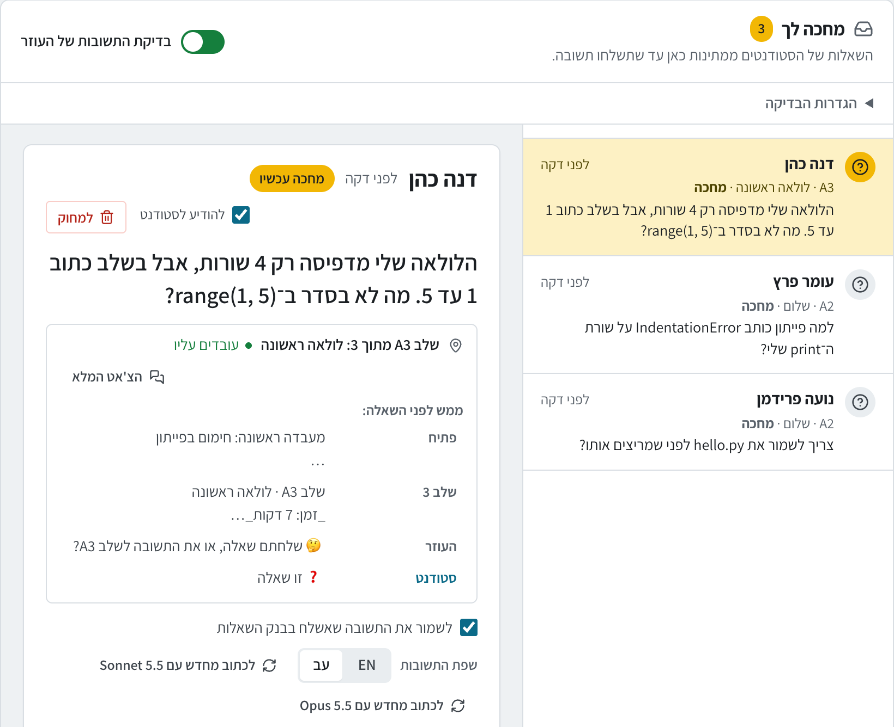

REINS Edu
REINS Edu
REINS הוא ראשי תיבות של Reviewed Explanations, Instructor-Navigated Steps

עוזר בינה מלאכותית למעבדות תכנות. המושכות נשארות בידי המרצה.
הסטודנטים עובדים על המעבדה בצ'אט, אבל זה צ'אט מיוחד. הוא לא נותן להם את הפתרון, וגם לא עונה מיד. כל תשובה עוברת קודם דרך המרצה, שרואה את כל השיחות בזמן אמת וקובע את הקצב של הכיתה.
חינם ובקוד פתוח (MIT). התוכנה רצה על המחשב של המרצה, והסטודנטים צריכים רק דפדפן.

הרעיון
כולנו עובדים עם צ'אט כל היום, וגם הסטודנטים. אז בואו נבחן אותם בצ'אט, איפה שהם נמצאים ממילא.
פעם, התרגיל הראה לנו איך הסטודנט עובד. היום כל תרגיל אפשר לפתור עם צ'אט, אז לבדוק אותו כבר לא אומר לנו כלום.
לכן המרצה, במקום לבדוק תרגילים, עובד עם הסטודנטים בתוך הצ'אט (teacher in the loop). המטרה היא לאמן אותם לא לקחת כמובן מאליו את מה שהצ'אט עונה, אלא לקבל את התשובות בחתיכות קטנות ולשאול כל הזמן שאלות.
מה בשליטת המרצה
כל תשובה עוברת דרך המרצה
כשסטודנט שואל שאלה, הוא לא מקבל תשובה מיד. העוזר מכין כמה תשובות אפשריות, מרמז קטן ועד הסבר מלא, והן מגיעות למרצה. המרצה בוחר אחת, מתקן אותה או כותב תשובה משלו, ורק אז היא נשלחת לסטודנט. אם השאלה רלוונטית לכולם, אפשר לשלוח את התשובה לכל הכיתה.
הכיתה מתקדמת יחד
המרצה קובע עד איזה שלב הכיתה יכולה להגיע. הוא רואה מי סיים כל שלב, ופותח את השלב הבא כשהכיתה מוכנה. אפשר לעצור את כולם בשלב מסוים, להחזיר את כל הכיתה אחורה, או להזיז סטודנט אחד קדימה או אחורה. בתרגיל בית כל סטודנט מתקדם בקצב שלו.
רמזים, לא פתרונות
הצ'אט לא נותן לסטודנטים את הפתרון. הם מקבלים רמז קטן, רמז ברור יותר או הסבר מלא, לפי מה שהמרצה בוחר בדשבורד. וגם כשהעוזר עונה לבד, בלי לחכות למרצה, התשובות שלו הן רמזים ושאלות, לפי ההנחיות שהמרצה כתב למעבדה.
בודקים שבאמת הבינו
בסוף שלב, וגם באמצע העבודה אם המרצה רוצה, הצ'אט שואל את הסטודנט שאלה קצרה על מה שהוא עשה, כדי לוודא שהוא באמת הבין. התשובות מגיעות למרצה. מי שענה נכון ממשיך לשלב הבא, ועל השאר המרצה מחליט.
הכול במסך אחד
בדשבורד, המרצה רואה איפה כל סטודנט נמצא, מי מחכה לתשובה, מה כל אחד שאל ומה הוא ענה. כל מה שמחכה למרצה מרוכז ברשימה אחת, וכשמשהו חדש מגיע, קופצת התראה.
בסוף השיעור
כל השיחות של הסטודנטים נשמרות, מכל המעבדות שהם עבדו בהן, יחד עם התשובות שלהם לשאלות הבדיקה. אחרי השיעור המרצה יכול לעבור עליהן, להעריך כמה כל סטודנט השקיע ועד כמה התשובות שלו טובות, ולפי זה לתת ציון.

איך נראה שיעור
הסטודנטים לא מתקינים כלום. הם פותחים קישור ונכנסים.
מכינים מעבדה
כל מעבדה היא תיקייה אחת. בתיקייה נמצאים השלבים שהסטודנטים רואים, ולידם ההנחיות לעוזר והתשובות הצפויות, שרק המרצה רואה. התוכנה מגיעה עם שלוש מעבדות לדוגמה.
משתפים קישור
מעלים קובץ CSV עם רשימת הסטודנטים (בעברית או באנגלית), ולוחצים על "שיתוף עם הסטודנטים".
מלמדים
עוקבים אחרי השיחות, בוחרים תשובות לשאלות של הסטודנטים, ופותחים את השלב הבא כשהכיתה מוכנה.
התקנה
התוכנה עובדת על macOS, Windows ו-Linux. צריך כ-1.5GB פנויים בדיסק וחיבור לאינטרנט. בהפעלה הראשונה היא מתקינה את Python ואת כל מה שהיא צריכה, והכול נשאר בתוך התיקייה שלה.
macOS או Linux (בטרמינל)
curl -fsSL https://raw.githubusercontent.com/Shpanier/reins-edu/main/install.sh | bashWindows (ב-PowerShell)
irm https://raw.githubusercontent.com/Shpanier/reins-edu/main/install.ps1 | iex- ההפעלה הראשונה מורידה כ-350MB ולוקחת כמה דקות. מהפעם השנייה זה עניין של שניות.
- הדשבורד נפתח בכתובת
http://localhost:8010, ושם יוצרים חשבון מרצה. - אחר כך מזינים מפתח API של Anthropic או של Google. המפתח נשמר רק על המחשב, והחיוב הוא לפי כמה שהכיתה משתמשת.
- החשבונות, השיחות והציונים נשמרים על המחשב של המרצה, ולמפתחי REINS Edu לא נשלח שום דבר. השאלות של הסטודנטים נשלחות למודל של Anthropic או של Google, דרך המפתח של המרצה.